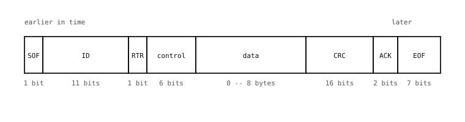

3.25. CAN bus temelleri¶
CAN (Controller Area Network) ilk olarak 1980’lerde Bosch tarafından, bir otomobildeki tüm elektronik kontrol birimlerini tek bir kısa paylaşımlı bus üzerine bağlamak için tasarlandı. Hala otomobil kablo donanımına hakimdir; ancak aynı sağlamlık, gerçek zamanlı davranış ve çoklu denetleyici (multi-master) tasarımı, onu her türden otomasyon, robotik, tarım ve endüstriyel ekipmanda varsayılan saha bus’ı yapar.
CAN, SPI ve I2C’nin yaptığı gibi tek bir “denetleyici” ile bir dizi “çevre birimine” sahip değildir. Bus üzerindeki her düğüm bir eştir ve herhangi bir düğüm, bus boştayken istediği zaman iletim yapabilir. Bunu ölçeklenebilir kılan şey, bus’ın yayın-tahkim (broadcast-with-arbitration) tasarımıdır.
3.25.1. Öncelik tahkimi ile yayın¶
Bir CAN bus üzerindeki her mesaj bir tanımlayıcı taşır – klasik standart çerçeve için 11 bit, genişletilmiş varyant için 29 bit. Tanımlayıcı bir adres değildir; mesajın ne hakkında olduğunu etiketler (motor RPM’i, fren pedalı konumu, akü gerilimi vb.). Bir düğüm bir değer göndermek istediğinde, onu uygun tanımlayıcıyla etiketleyerek yayınlar ve bus üzerindeki her düğüm bu yayını görür. Her alıcı, yalnızca önemsediği ID’leri seçip almak için bus’ı donanımda filtreler.
İki düğüm aynı anda iletim yapmaya çalışırsa, bus’ın elektriksel tasarımı, daha düşük sayısal tanımlayıcıya sahip mesajın hiçbir bit kaybetmeden kazanmasını sağlar.
İşin püf noktası, bus’ın iki elektriksel durumudur: dominant (mantıksal olarak 0) ve recessive (mantıksal olarak 1). Hiçbir düğüm konuşmadığında CAN kabloları sonlandırma dirençleri tarafından yüksekte (recessive) tutulur; herhangi bir düğüm, alıcı-vericisi üzerinden akım kaynaklayarak kabloları aşağı çekebilir (dominant). Sonuç bir kablolu-AND’dir: herhangi tek bir düğüm bus’ı dominant sürerse hat dominant okunur ve yalnızca her düğüm onu serbest bıraktığında recessive okunur. Dominant her zaman kazanır. (Bazı kaynaklar aynı düzenlemeyi kablolu-OR olarak adlandırır; “dominant”ı, recessive bitlerin AND’i yerine onaylanmış sinyal olarak ele alır – fiziksel davranış her iki şekilde de aynıdır.)

Kavramsal biçimiyle kablolu-AND. Gerçek CAN, aynı mantığı bir diferansiyel çift (CAN_H / CAN_L) üzerinde, alıcı-vericiler ve sonlandırma dirençleri her iki kabloya bölünmüş halde çalıştırır; ancak bus üzerindeki kural aynıdır: herhangi bir düğüm dominant çekebilir, yalnızca her düğüm serbest bıraktığında recessive okunur.¶
Tahkim bu asimetriyi doğrudan kullanır. İletim yapan her düğüm ID’sini birer bit halinde, önce MSB olacak şekilde gönderir ve iletim yaparken bus’ı izler. Kabloya recessive bir bit koyup geri dominant okuyan bir düğüm, daha düşük ID’ye sahip başka bir düğümün aynı anda iletim yaptığını ve o bit konumunu kazandığını anlar. Hemen bus’ı sürmeyi bırakır ve dinler. Bu sırada kazanan düğüm kendi bitlerinin değişmeden çıktığını görür – onun bakış açısından olağandışı hiçbir şey olmamıştır. Daha düşük numaralı ID kazanır, çünkü dominant bitleri, daha yüksek numaralı ID’lerin aynı konumlarda göndereceği recessive bitleri geçersiz kılar.
Kaybeden ise bus’ın boşa geçmesini bekler ve otomatik olarak yeniden dener. Çakışma yok, kayıp mesaj yok – yalnızca belirlenimci öncelik sıralaması vardır.
CAN’in ölçekte çalışmasını sağlayan yayınla/abone ol (publish/subscribe) tarzı budur: herkes konuşabilir, herkes dinleyebilir ve ID’ler dağıtımı örtük hale getirir.
3.25.2. Fiziksel bus¶
MCU’nun CAN denetleyicisi bus’ı doğrudan sürmez. Yalnızca iki adet 3,3 V CMOS pin sunar – TX (göndermek istediği bit) ve RX (bus üzerinde gördüğü bit) – ve bu pinler, CAN transceiver (alıcı-verici) veya PHY olarak adlandırılan ayrı bir çipe gider. Alıcı-verici, denetleyici ile gerçek CAN kabloları arasında yer alır; bus ile nasıl konuşulacağını bilen şey odur.
Bus’ın kendisi bir 5 V diferansiyel çifttir:
CAN_H – çiftin “yüksek” kablosu.
CAN_L – “düşük” kablo.
Recessive durumda her iki kablo da kabaca 2,5 V’ta (bus’ın 5 V beslemesinin orta noktası) durur. Dominant durumda alıcı-verici CAN_H’yi yaklaşık 3,5 V’a yukarı çeker ve CAN_L’yi yaklaşık 1,5 V’a aşağı çekerek çift boyunca yaklaşık 2 V’luk bir diferansiyel üretir. Alıcılar iki kablo arasındaki farkı örnekler; bu da sinyali, uzun kablo hatlarında alınan ortak-mod gürültüsüne karşı bağışık kılar.
Alıcı-vericinin çift yönlü görevi:
TX tarafında, denetleyicinin 3,3 V tek uçlu TX pinini okur ve dominant için CAN_H ile CAN_L’yi birbirinden ayırarak sürer ya da recessive için her ikisini de serbest bırakır.
RX tarafında, diferansiyel CAN_H / CAN_L çiftini okur ve RX pininde denetleyiciye geri tek uçlu 3,3 V seviyesi bildirir.
Kablonun her bir fiziksel ucunda birer adet olmak üzere iki adet 120 ohm’luk sonlandırma direnci, hiçbir düğüm sürmediğinde bus’ı recessive orta noktada tutar ve uzun hatlarda diferansiyel sinyali bozacak yansımaları sönümler.
3.25.3. Veri çerçevesi¶
Standart bir CAN veri çerçevesi kablo üzerinde şöyle görünür:

Standart bir CAN veri çerçevesi: SOF, ID, RTR, kontrol, veri, CRC, ACK ve EOF alanları.¶
Her alanın belirli bir görevi vardır:
SOF (çerçeve başlangıcı). Yeni bir çerçevenin başladığını söyleyen ve her düğümün bit saatini senkronize eden tek bir dominant bit.
ID (tanımlayıcı). Bus’ın tahkim ettiği 11 bitlik tanımlayıcı. Daha düşük numara = daha yüksek öncelik.
RTR (uzaktan iletim isteği). Veri teslimi yerine bir veri isteğinde ayarlanır; eşleşen ID’ye sahip alıcılar, veriyi kendileri göndererek yanıt verir.
Kontrol. Veri uzunluğunu (
DLC) ve birkaç idari biti kodlayan 6 bitlik bir alan.Veri. 0 ila 8 baytlık yük (CAN Classic; CAN FD bunu 64 bayta genişletir).
CRC. Toplam 16 bit: önceki alanlar üzerinde 15 bitlik bir CRC artı 1 bitlik bir CRC sınırlandırıcısı.
ACK. Toplam 2 bit. İlk bitte – ACK yuvasında – iletici hattı serbest bırakır ve çerçeveyi doğru alan herhangi bir düğüm onu aşağı çeker; ikinci bit recessive bir sınırlandırıcıdır. Bir ACK’nin yokluğu, iletiyi hiçbir düğümün duymadığını ve yeniden denemesi gerektiğini ileticiye söyler.
EOF (çerçeve sonu). Çerçeveyi kapatan yedi recessive bit.
Bütün bunlar CAN denetleyicisi tarafından donanımda üretilir ve çözülür; yazılım yalnızca ID’yi, veriyi ve birkaç bayrağı görür.
3.25.4. CAN nerede yer alır¶
CAN’in tasarım tercihleri onun nişini belirler:
Sağlam. Bükümlü çift üzerinde diferansiyel sinyalleme, yerleşik hata tespiti, belirlenimci öncelik tahkimi ve otomatik yeniden denemeler, CAN’in UART ve SPI’ın veriyi bozacağı elektriksel olarak gürültülü ortamlarda hayatta kalmasını sağlar.
Çoklu denetleyici (multi-master). Herhangi bir düğüm istediği zaman konuşabilir. Merkezi bir denetleyici gerekmez ve hiçbir düğüm tek bir arıza noktası değildir.
Bant genişliği sınırlı. Klasik CAN yaklaşık
1 Mbit/sile sınırlıdır; CAN FD bunu genişletir. CAN, bağlantının kartlar veya modüller arasında, çoğu kez metrelerce kablo üzerinden olduğu ve güvenilirliğin öncelik olduğu durumlarda doğru cevaptır.Üst katman protokolleri. Çıplak CAN bus, bir ID’nin ne anlama geldiğini veya uzun bir mesajın parçalara nasıl bölüneceğini söylemez. Uygulama katmanı protokolleri – CANopen, J1939, ISO-TP/UDS, NMEA 2000 – bu kuralları üstüne katmanlar. Bilmeye değer ayrı bir öğe de DBC dosyasıdır: belirli bir araç veya sistemde hangi ID’lerin hangi bit düzeyindeki sinyalleri taşıdığını kaydeden, üreticiye özgü bir metin biçimi. DBC dosyaları, kendi başına bir protokol değil, bir bus’ın mesaj düzenini açıklayan bir meta veri biçimidir.
Kodda CAN bus içindeki sürücü kablo düzeyindeki CAN çerçevesini işler; ID’leri anlamlara eşlemek uygulamanın işidir.